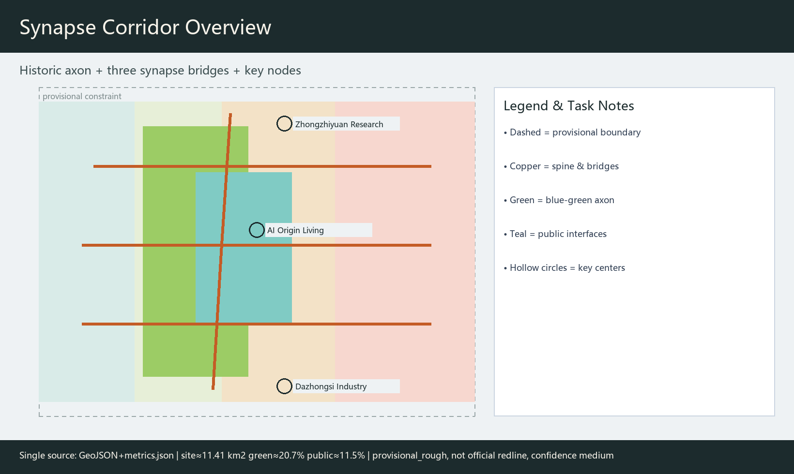
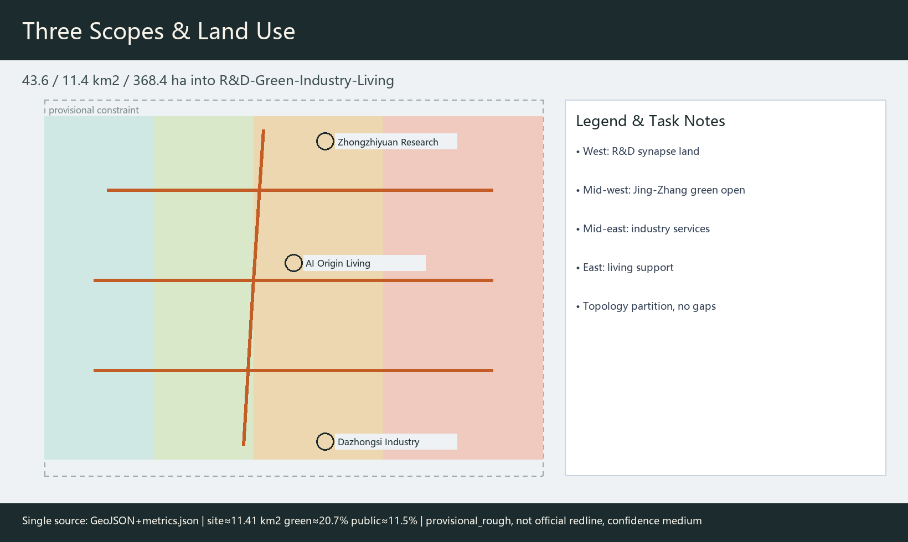
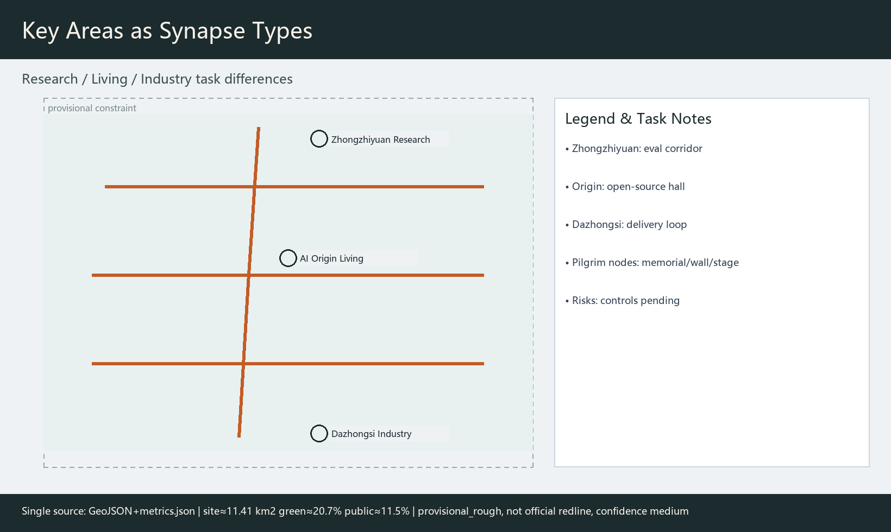
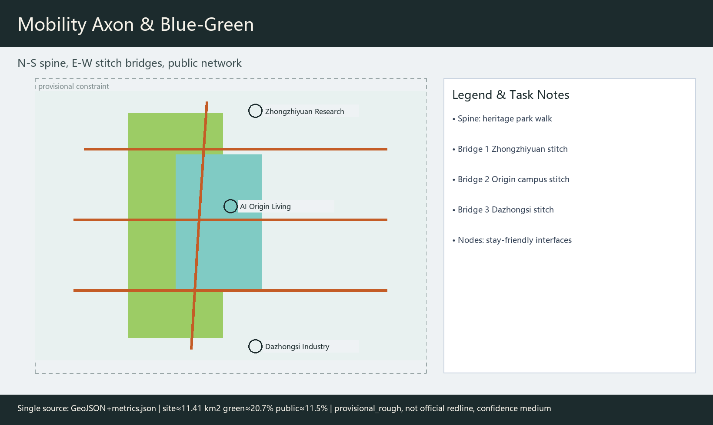
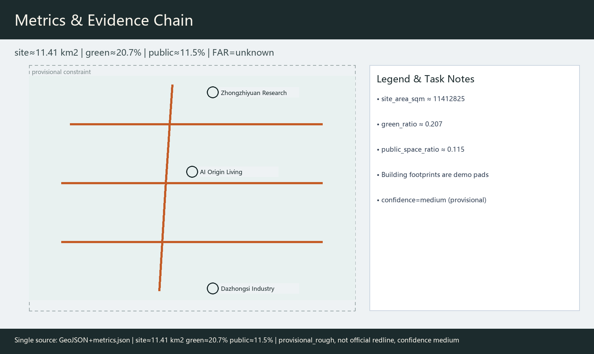

Jing-Zhang Synapse Corridor: Multi-Agent Co-Governed Centennial AI Innovation Belt
Treats the Jing-Zhang railway heritage park as a historic axon and proposes a multi-agent synapse network stitching campuses, industry, and neighborhoods. v0.2 adds logo concept art, case table, full scenario cards, governance architecture, pilot work packages, and a copyright ledger. Geometry is provisional; metric confidence is medium.
Jing-Zhang Synapse Corridor: Multi-Agent Co-Governed Centennial AI Innovation Belt
Design Basis and Source List
This formal package uses the prequalification announcement as the primary public mandate 来源, the agent taskbook six required tasks and boundary clauses as constraints 来源, the site package and public source registry to separate formal-ready / background / provisional materials 来源, and the processed fact pack as reading navigation 来源. Geometry starts from provisional_boundaries.geojson with official_boundary=false and boundary_precision=provisional_rough, used only for generation, visualization, and intake—not as an official redline. Replace and recalculate when official polygons arrive 指标.
Mandatory standard snapshots are read locally: land-use classification follows the MNR guide 标准; urban-design depth follows MOHURD urban-design and regulatory-plan measures 标准. Every spatial move is a conceptual suggestion for professional deepening, not government approval or engineering conclusion. v0.2 uses metrics.json as the single metric source for figures/PDF/HTML/prose, and lowers provisional metric confidence to medium.

Three-Level Scope Framework
Coordinated research area ~43.6 km²: ecosystem, three-areas-two-wings collaboration, naming, and culture. Overall design area ~11.4 km²: renewal framework, land use, walkable blue-green, Jing-Zhang vitality belt at regulatory-plan urban-design depth 深度. Key areas ~368.4 ha: Zhongzhiyuan ~192.1 ha, AI Origin Community ~104.3 ha, Dazhongsi ~72.0 ha as research / living / industry synapses 空间数据.
Boundaries are provisional_rough, drawn as low-contrast dashed constraints. Ratios are directional only and must be recomputed after official redlines 指标.

Coordinated Research Area: Industry and Future City Research
Naming, logo, and identity (agent.1)
Primary name: Jing-Zhang Synapse Corridor / 京张突触廊. Metaphor: the railway is the century axon; multi-agent human–AI collaboration is the contemporary synapse. Logo concept (assets/figures/logo-mark.en.png): one N–S thin spine + three E–W arcs + hollow circles (human-review interfaces). Rules: minimum clear width ≥24 mm for wayfinding; brick-gray base with copper-orange accent; scenario-card badge uses hollow nodes only; no unauthorized trademarks or cute mascots. The mark is a concept identity, not a registered trademark.
Three positionings: centennial Jing-Zhang culture belt, urban AI living-experience belt, AI fusion innovation belt 来源. Five functions: full-stack autonomy, world-class ecosystem, scenario enablement, vibrant city, governance discourse. Three areas and two wings: Zhongzhiyuan–Origin–Dazhongsi cores; Zhongguancun service wing and Xiaoyuehe scenario wing as loops.
International case comparison and ecosystem map (agent.2)
| Case | Spatial/policy context (summary) | Transfer point | Source |
|---|---|---|---|
| Cambridge Silicon Fen | University-adjacent startup corridor | Campus–street interface opening | 来源 |
| ETH/EPFL corridor | Knowledge-transfer corridor | Research-to-testbed spine | 来源 |
| Toronto Vector ecosystem | Institute + urban community | Shared eval and community rooms | 来源 |
| Paris Station F | Concentrated startup campus | Public programs + shared services | 来源 |
| Singapore one-north | Mixed innovation district | Park–lab mixing | 来源 |
| Helsinki smart governance | Open data and civic review | Human review and public audit | 来源 |
Cases are secondary summaries for transfer hypotheses only [assumption:A-CASE-SECONDARY-001].
Full-stack ecosystem map (concept): land/space discussion → talent and campus transfer → open-source/eval services → edge compute and data compliance → scenario opening and public participation → governance discourse. Service flow: request access → scenario filing → sandbox test → human review → public feedback → contribution credit.
Regional collaboration map (concept)
| Interface | Suggested flows | Cooperation joint | Actor category | Stage goal (concept) |
|---|---|---|---|---|
| North-latitude community | Youth talent/events | Joint open days | Community operators | Near-campus co-creation |
| Future Science City | Research facilities/eval | Eval recognition talks | Platform institutes | Mid-term eval linkage |
| Huairou Science City | Large facilities/data norms | Standards dialogue | Research institutes | Interface standards |
| Economic-Technological Zone | Manufacturing pilots | Industry pilot lines | Firm alliances | Scenario spillover |
| Beijing-Tianjin-Hebei | Talent/event circuit | Synapse Week satellites | Regional event network | Annual circuit |
These are not statutory cross-jurisdiction plan changes.
Overall Design Area: Urban Renewal and Regulatory-Plan-Level Urban Design
Spatial concept: one spine, three bridges, many nodes—N–S walkable axon along the heritage park, with E–W synapse bridges at Zhongzhiyuan, Origin, and Dazhongsi 空间数据. Land-use partitions (R&D, blue-green, industry services, living support) are topology-cut from the boundary without gaps/overlaps 空间数据 深度.
Renewal framework (concept): prioritize heritage and mature carriers; renovate campus-edge interfaces and public ground floors; FAR/height/demolition remain pending controls [assumption:A-CONTROLS-001].
Detailed Design of Key Areas
Zhongzhiyuan research synapse: garden R&D clusters + safety-eval corridor + Qinghe cultural edge; building action is renovate demo pad only 空间数据.
Beijing AI Origin living synapse: open-source hall, university–industry parlor, walkable campus loop; youth-friendly, caregiver-friendly routes, accessible wayfinding.
Dazhongsi industry synapse: four-quadrant public interface, low-speed robot delivery loop, data-element parlor; mixed commercial/industry as conceptual program guidance.

AI Innovation Ecosystem, Personas, and AI+ Scenarios
Personas (5)
| ID | Persona | Primary space | Need |
|---|---|---|---|
| P1 | Graduate developer | Origin / Zhongzhiyuan | Open-source release, eval, night walk safety |
| P2 | Startup model engineer | Eval corridor | Edge compute, sandbox, compliance advice |
| P3 | Enterprise agent PM | Dazhongsi | Scenario filing, pilots, demos |
| P4 | Residents / elders / caregivers | Living belt & parks | Non-digital alternatives, accessibility, opt-out |
| P5 | Civic safety auditor | Governance gallery | Audit logs, veto, complaint channel |
Inclusive paths also cover people with disabilities, children and caregivers, low-income and non-smartphone users (paper guides/service desks), and visitors (multilingual wayfinding).
Industry test/validation scenarios (≥3)
1. T1 Low-speed delivery sandbox (Dazhongsi loop): speed/time limits, human takeover, exit conditions. 2. T2 Open-model public eval week (Zhongzhiyuan): public datasets, published scores, dispute review. 3. T3 Multi-agent operations drill (governance gallery): human review mandatory; no automatic field enforcement.
Full AI scenario cards (10)
| Card | Spatial node | Users | Data/privacy | Human review | Suggested operator |
|---|---|---|---|---|---|
| 1 Walkability diagnosis | ROAD-001 / GREEN-001 | P1/P4/P5 | Aggregated public traces; opt-out default | Safety officer sign-off | Park ops + volunteers |
| 2 Open-source hall | Origin PUBLIC node | P1/P2/P3 | Public artifacts only | Community host | Open-source operator |
| 3 Tech-transfer parlor | Campus edge | P1/P3 | Booking; drafts deleted | Liaison officer | Transfer service |
| 4 Talent life steward | Living support belt | P1/P4 | Minimization; opt-out | Human hotline | Community service center |
| 5 Delivery corridor test | Dazhongsi loop | P3/P5 | Vehicle sensors; no face DB | On-site safety officer | Firm alliance + street office |
| 6 Safety governance gallery | Zhongzhiyuan | P2/P5 | Display only | Civic auditor | Platform institute |
| 7 Data-element theater | Dazhongsi | P3/visitors | Anonymized demos | Docent | Industry operator |
| 8 Jing-Zhang memory guide | Axon | Visitors/P4 | Voice off anytime | Culture volunteer | Cultural institution |
| 9 Xiaoyuehe open day | Scenario wing | Public | Registration + paper channel | Event safety lead | Organizing committee |
| 10 Synapse Week tour | Three-area route | Global visitors | Optional credit wall | Tour dispatcher | Brand operator |
Cards map to spatial layers and avoid non-public or sensitive personal data 来源.
Multi-agent governance architecture (concept)
| Agent role | Inputs | Authority | Conflict handling | Audit log | Human veto |
|---|---|---|---|---|---|
| Walkability agent | Public facility data | Advise only | Traffic desk | Required | Safety officer veto |
| Scenario filing agent | Firm filings | Form check | Governance desk | Required | Auditor rejection |
| Delivery dispatch agent | Sandbox sensors | Advise in sandbox | Auto-stop on breach | Required | On-site e-stop |
| Culture guide agent | Public cultural text | Content only | Complaint ticket | Optional | User disable |
| Governance audit agent | Log summaries | Risk alerts | Human committee | Required | Committee final |
Principles: opt-out by default, data minimization, no automatic high-risk field actions.
Land Use, Building Scale, and Retain-Renovate-Demolish Strategy
Land-use partitions are topologically derived from the submitted site boundary so adjacent polygons share coordinates and coverage has no gaps or overlaps 空间数据. The green partition supports the Jing-Zhang axon commons; R&D and industry partitions serve Zhongzhiyuan and Dazhongsi synapses; living-support partitions serve the Origin community. Building footprints only illustrate two conceptual demonstrations—renovate at the research synapse and retain_adapt at the industry synapse—without parcel-level demolition conclusions 空间数据. FAR, height, and total floor area remain unknown pending regulatory controls and ownership data 指标.
Transport, Rail, Municipal Infrastructure, and Public Services
One spine and three bridges address N–S continuity and E–W stitching 空间数据. Road classes use greenway / branch / pedestrian / cycleway. Rail integration, parking, delivery, and edge-compute stations are system suggestions only—no load or bridge/tunnel feasibility claims [assumption:A-CONTROLS-001].

Blue-Green Network, Public Space, and Urban Character
Blue-green continuity follows the axon 空间数据. Public spaces serve developers, employees, residents, and visitors 空间数据 指标.
Public-space / landmark catalog (concept): axon memorial, Origin signature wall, Dazhongsi agent stage; component kit includes release kiosk, eval screen, walkway light bollard, accessible wayfinding, and paper-guide rack. Honor system: optional contribution wall, open-source badges, Synapse Week memorial route.
Renewal Projects, Implementation Policy, and Phasing
Phasing: near-term axon + Origin living synapse; mid-term Dazhongsi industry synapse and event system 空间数据.
Three priority pilot work packages (conceptual)
| Package | Spatial IDs | Actor category | Dependencies | Stage gate | Public participation | KPI (discussion) | Human review / exit |
|---|---|---|---|---|---|---|---|
| WP1 Axon walk continuity | ROAD-001, GREEN-001 | Park ops + street office | Heritage / traffic safety | Safety assessment pass | Walk audit workshop | Break closure rate; complaint SLA | Officer veto; stop after incident |
| WP2 Origin open-source hall | PUBLIC-001 (Origin) | Community ops + university services | Tenure / fire safety | Filing + accessibility acceptance | Developer co-creation | Open-day count; accessibility items | Host review; complaint circuit-breaker |
| WP3 Dazhongsi delivery sandbox | Dazhongsi loop roads | Firm alliance + street office | Traffic permit / insurance | Public sandbox rules | Resident consultation | E-stop latency; intrusion count | On-site e-stop; exit on breach |
Resource level, maintenance duty, and operating cost are category discussions only—no investment figures or fiscal commitments. Long-term ops use annual Synapse Week for developer festival, open days, eval contests, and cultural night walks along visit–experience–co-create–credit–reshare 来源.
Metrics, Area Recalculation, and Compliance Matrix
Core metrics are recomputed in EPSG:4548 and shared by figures/HTML/PDF: site area ~11.41 km², green ratio ~20.7%, public-space ratio ~11.5% 指标. Building footprint and related ratios are listed in metrics.json 指标. Public-space ratio and key-area count use the same recomputation chain with medium confidence 指标. Provisional values are not statutory. compliance_matrix gives differentiated sections/evidence for agent.1–agent.6.

Risk, Copyright, and Compliance
Only public/cleared repository materials and provisional boundaries are used 来源. Itemized rights for fonts, images, maps, code, logo, AI assets, and case materials are in report/copyright_statement.md; bilingual QA notes are in changelog.md v0.2. The visual is offline static HTML. Intensity, alignments, investment, and events remain conceptual suggestions 标准. Privacy scenarios keep minimization, opt-out defaults, and human review. validation_claim.data_confidence is set to medium to match provisional geometry. Final selection rests with human maintainers and professional teams.
References
The announcement and taskbook set scopes, two wings, and six agent tasks 来源; the site package defines provisional precision; the registry separates formal-ready from background/provisional; CASE-* records support comparative notes; MOHURD/MNR snapshots support professional wording 标准. When official redlines or regulatory sheets enter the repository, replace geometry and metrics before re-checking.